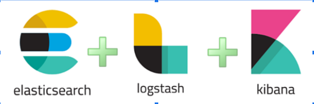
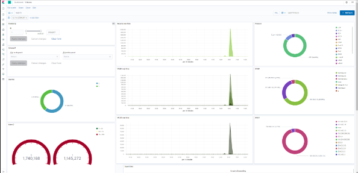

This project aimed to Explore data to detect attack vectors based on indicators of compromise of cybersecurity. For this project, I had to use the ELK stack which is Elastic Search, Logstash, and Kibana through the containerized environment I have previously made. The goal of this project was to use Logstash to ingest compromised test data, and then pipeline that data to Elastic Search, and then to Kibana where the data would be visualized so we could look for indicators of compromise. Specifically, I was looking at network data and wanted to see if there was a way I could create a dashboard that could help monitor network data and alert a user if there was an attack. Such attacks include Man-in-the-middle, denial of service, recon, and bot malware attacks.
In this project, I was the sole student working with the docker code and worked with my mentor to make sure I was working in the right direction, so I was responsible for all the work in this project. The project was about using the containerized environment I had previously made to work with Logstash, Elastic Search, and Kibana. My task involved running multiple containers in parallel so that I could ingest data through Logstash, run it through elastic search, and then visualize the data with Kibana. I also had to add volumes that are used for data persistence, which is important if we still want data to persist even though the container is stopped or removed. Finally, I was also responsible for creating a dashboard within Kibana that could possibly detect network attacks by just looking at the network data.
I learned a lot through this project such as understanding Docker at a higher level, Logstash, Elastic search, and Kibana, some basics of networking data, and learning to work on a topic having no prior experience. For example, I was able to create a fully working containerized Docker environment that could take in data through Logstash, which would run through Kibana and would be visualized on my browser, which helped me to increase my understanding of the ELK stack and how strong Kibana is as a visualization application. Another thing that I learned was the basics of networking data, because by looking at the network data I was able to do some research on what network data was the most helpful for detecting attacks, and what network data wasn’t as helpful. Below is an image of a sample dashboard in Kibana.
